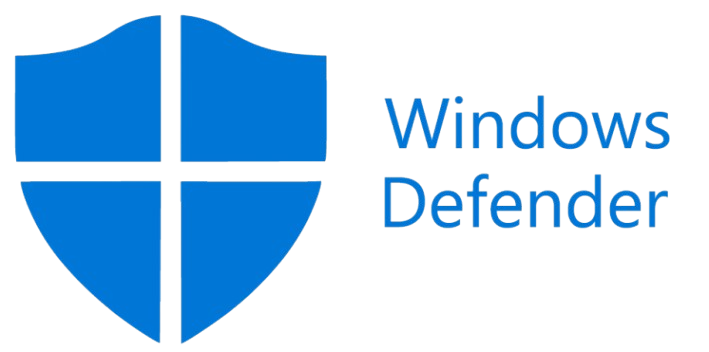
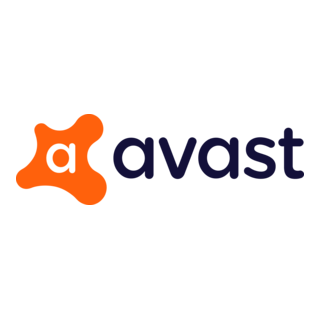
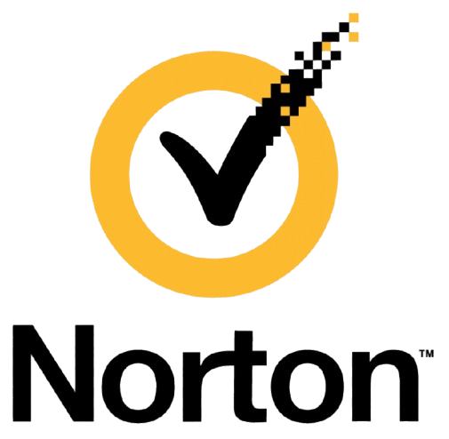

Introdução
A segurança da informação na web envolve práticas e ferramentas usadas para proteger dados pessoais, contas, dispositivos e sistemas contra acessos indevidos, golpes e ataques digitais. Hoje, como grande parte das atividades acontece pela internet — bancos, redes sociais, compras, estudos e trabalho — entender os riscos digitais é essencial.
Importância da precaução com dados digitais
- Prevenção de fraudes e golpes: Proteger dados como CPF, números de cartão e senhas evita que golpistas abram contas ou façam compras em seu nome.
- Segurança financeira: Protege o acesso a aplicativos de bancos e plataformas de pagamento digital contra invasores.
- Continuidade nos negócios: Para empresas, evitar vazamentos e ataques (como ransomware) preserva a reputação da marca e garante a continuidade das operações.
- Conformidade Legal: No Brasil, a Lei Geral de Proteção de Dados (LGPD) obriga empresas a manterem os dados dos clientes seguros e transparentes, sob risco de multas.
O que são senhas seguras?
As senhas são a primeira barreira de proteção das contas online. Uma senha fraca pode ser descoberta facilmente por criminosos usando programas automáticos. Para determinar se uma senha é forte ou não, a senha deve ter:
- Ter pelo menos 12 caracteres;
- Letras maiúsculas;
- Letras minúsculas;
- Números;
- Símbolos;
- Não usar informações pessoais:
- A senha deve ser única para cada conta.
Malwares
Malware (do inglês malicious software) é qualquer software ou código projetado intencionalmente para infiltrar-se, danificar, interromper ou roubar dados de dispositivos, redes ou sistemas sem o consentimento do usuário.
Os principais objetivos e formas de atuação incluem:
- Roubo de Dados: Coleta de credenciais, números de cartão de crédito e informações pessoais (Spyware, Keyloggers).
- Extorsão Financeira: Criptografia de arquivos ou bloqueio de sistemas exigindo pagamento (Ransomware).
- Controle Remoto: Criação de "backdoors" para invasores controlarem o dispositivo ou formarem redes de zombies (Botnets, Trojans).
- Propagação e Espionagem: Reprodução automática pela rede ou exibição de anúncios indesejados (Vírus, Worms, Adware).
Phishing
Phishing é uma técnica de engenharia social utilizada por cibercriminosos para enganar usuários e obter informações confidenciais, como senhas, dados de cartões de crédito e credenciais de login. Os ataques consistem no envio de comunicações fraudulentas (e-mails, mensagens de texto ou chamadas) que parecem legítimas, imitando fontes confiáveis como bancos, redes sociais ou empresas conhecidas.
Os objetivos principais do phishing incluem:
- Roubo de dados: Obter acesso a contas pessoais ou corporativas.
- Instalação de malware: Induzir o usuário a baixar ou abrir arquivos infectados.
- Fraude financeira: Direcionar pagamentos para contas falsas ou roubar dados financeiros.
Os atacantes exploram a urgência, o medo ou a confiança para manipular as vítimas a clicarem em links maliciosos ou a fornecerem informações sensíveis sem verificar a autenticidade da solicitação.
Antivírus
Antivírus é um software utilitário de segurança cibernética projetado para detectar, prevenir e remover malware (software malicioso) de computadores, dispositivos móveis e redes. Embora o nome sugira proteção apenas contra vírus, o termo é hoje usado genericamente para descrever ferramentas que combatem diversas ameaças, incluindo worms, cavalos de Troia, spyware, adware e ransomware.
O funcionamento baseia-se em métodos como:
- Detecção por assinatura: comparação de arquivos com um banco de dados de padrões conhecidos de ameaças.
- Detecção heurística: análise comportamental para identificar atividades suspeitas ou desconhecidas.
- Monitoramento em tempo real: verificação constante de downloads, e-mails e dispositivos externos.
Ao identificar uma ameaça, o antivírus toma medidas como deletar o arquivo, colocá-lo em quarentena ou bloquear sua execução, protegendo a integridade dos dados e do sistema. É recomendado manter o software sempre atualizado para garantir a eficácia contra as vulnerabilidades mais recentes.
Os antivírus mais conhecidos:

O Windows Defender, atualmente denominado Microsoft Defender Antivirus, é a solução de segurança nativa e integrada ao sistema operacional Windows (10 e 11). Diferente de antivírus de terceiros que precisam ser instalados, ele já vem ativo por padrão, oferecendo proteção em tempo real contra vírus, malware, spyware e ransomware sem custo adicional.
Sua principal aplicação é atuar como a primeira linha de defesa do sistema, utilizando inteligência artificial e a nuvem da Microsoft para identificar ameaças rapidamente.
O Microsoft Defender evoluiu de um simples antispyware para uma suíte de segurança completa. Suas aplicações no sistema incluem:
- Proteção Contra Ransomware (Acesso Controlado a Pastas): Uma das ferramentas mais valiosas, que impede que aplicativos não autorizados alterem arquivos em pastas protegidas (como Documentos e Imagens), combatendo a criptografia maliciosa de dados.
- SmartScreen: Protege contra sites de phishing e downloads maliciosos no navegador Microsoft Edge e verifica aplicativos baixados da internet antes da execução.
- Firewall do Windows: Gerencia o tráfego de rede, bloqueando conexões de entrada e saída não autorizadas.
- Core Isolation: No Windows 11, utiliza recursos de virtualização para proteger processos críticos do sistema contra injeção de código malicioso na memória.
- Offline Scan: Permite reiniciar o computador em um ambiente seguro (fora do Windows) para remover malwares persistentes ou rootkits que não podem ser eliminados enquanto o sistema está em execução.
Em 2026, o consenso entre especialistas e testes de laboratórios independentes (como AV-TEST) é que o Microsoft Defender é suficiente para a grande maioria dos usuários. Ele oferece taxas de detecção comparáveis às soluções pagas.
Para acessar o site do Microsoft Defender e saber mais: https://www.microsoft.com/pt-br/microsoft-365
O McAfee é uma das empresas de cibersegurança mais antigas e reconhecidas do mercado, famosa por ter criado o primeiro produto antivírus comercial. Suas aplicações focam fortemente na proteção de múltiplos dispositivos e na privacidade de dados, oferecendo recursos avançados de limpeza de informações pessoais na internet.
O McAfee se destaca em cenários onde a proteção de identidade e a gestão de múltiplos dispositivos são prioritárias.
- Proteção de Identidade e Privacidade: É um dos líderes em ferramentas de remoção de dados pessoais da internet (Data Cleanup), ajudando a reduzir o risco de doxxing e golpes direcionados.
- Cobertura Ilimitada: Os planos superiores (Premium e Advanced) permitem instalar o antivírus em quantos dispositivos quiser, o que é ideal para famílias grandes ou usuários com muitos gadgets (PCs, Macs, tablets, smartphones).
- McAfee WebAdvisor: Uma extensão de navegador robusta que classifica resultados de busca e links em redes sociais com cores (verde, amarelo, vermelho) para indicar segurança, protegendo eficazmente contra phishing.
- File Shredder: Garante que arquivos deletados não possam ser recuperados por softwares de recuperação de dados, essencial para privacidade máxima.
O modelo do McAfee para computadores é estritamente pago, com limitações significativas na versão gratuita.
- Windows e macOS: Não existe versão gratuita permanente. A empresa oferece apenas um teste gratuito de 30 dias do plano "Total Protection". Após esse período, é necessário assinar um plano pago.
- Android e iOS: Existe um aplicativo McAfee Mobile Security gratuito para celulares, que inclui verificação de vírus básica e algumas ferramentas de anti-furto. No entanto, recursos como VPN e proteção avançada contra phishing exigem assinatura
Para adquirir McAfee, acesse esse link e siga o Suporte: https://www.mcafee.com/support

O Avast é uma das soluções de antivírus mais populares do mundo, desenvolvida pela empresa tcheca Avast Software. O Avast se destaca por oferecer uma versão gratuita robusta e permanente para uso pessoal, competindo diretamente com a Kaspersky e superando o Windows Defender em recursos extras.
Vantagens sobre outros antivírus grátis:
- VPN Incluída: É um dos poucos gratuitos que oferece VPN integrada, embora com limite de dados, algo que o Windows Defender e o AVG Free não possuem nativamente.
- Proteção de Rede Wi-Fi: O "Network Inspector" analisa a segurança da rede local e alerta sobre vulnerabilidades no roteador, um recurso geralmente pago em outras suites.
- Multiplataforma: A licença gratuita cobre Windows, macOS e Android com recursos consistentes, enquanto muitos concorrentes limitam a versão free apenas ao Windows.
O Avast oferece duas variantes gratuitas que são raras no mercado por incluírem proteções avançadas sem custo:
- Avast Free Antivirus (Clássico): Focado puramente em segurança. Inclui varredura de malware em tempo real, proteção contra ransomware, firewall básico, inspeção de rede Wi-Fi e atualizador de software.
- Avast One Essential (Moderno): A nova interface unificada que substitui gradualmente o Free clássico. Além da proteção antivírus, inclui uma VPN gratuita (com limite de 5GB por semana), verificação de vazamento de dados (dark web monitoring) e ferramentas básicas de otimização de sistema.
Para adquirir Avast, acesse esse link: https://www.avast.com/free-antivirus-download
Kaspersky é uma empresa global de cibersegurança fundada em 1997 por Eugene Kaspersky, especializada no desenvolvimento de software para proteger dispositivos contra vírus, malware, ransomware, phishing e ataques de hackers.
As aplicações da Kaspersky são projetadas para oferecer proteção em camadas, utilizando inteligência artificial e aprendizado de máquina para detectar ameaças desconhecidas (zero-day) e bloquear ataques de ransomware antes que criptografem arquivos. A principal vantagem competitiva da marca reside em sua alta taxa de detecção em testes independentes (como AV-Comparatives) e um impacto mínimo no desempenho do sistema durante jogos ou tarefas pesadas.
A arquitetura de segurança inclui:
- Kaspersky Security Network (KSN): Uma infraestrutura em nuvem que processa dados de milhões de usuários para identificar rapidamente novos vírus e sites maliciosos.
- System Watcher: Um componente crítico que monitora o comportamento do sistema e permite reverter ações de malware (como ransomware) restaurando arquivos alterados.
- Proteção de Pagamentos: Cria um ambiente isolado e criptografado para transações financeiras online, impedindo que keyloggers capturem dados bancários.
O Kaspersky Free é uma versão robusta voltada exclusivamente para usuários de Windows. Diferente de muitas soluções gratuitas que limitam drasticamente a proteção, ele oferece o mesmo motor de detecção de vírus das versões pagas. Não inclui ferramentas de privacidade (como VPN), gerenciador de senhas, proteção de webcam, controle parental avançado ou cofre de arquivos. A cobertura é restrita a apenas um dispositivo.
Para adquirir Kaspersky e testar por si mesmo, acesse este link: https://www.kaspersky.com.br/downloads/antivirus

O Norton Security é um conjunto abrangente de segurança cibernética e antivírus desenvolvido pela Gen Digital (anteriormente Symantec). Ele protege computadores, tablets e celulares contra vírus, malwares, ransomware, sites falsos (phishing) e roubo de dados.
Principais Funcionalidades:
- VPN Segura: Criptografa sua conexão com a internet para proteger sua privacidade, especialmente em redes Wi-Fi públicas.
- Backup na Nuvem: Oferece espaço de armazenamento online para proteger arquivos importantes contra perda ou ataques de ransomware.
- Gerenciador de Senhas: Armazena e protege suas credenciais de login de forma criptografada.
Uma característica fundamental do Norton é que não existe uma versão gratuita definitiva do seu antivírus para uso contínuo.
- Período de Teste: Usuários podem acessar o software gratuitamente através de testes de 7 a 30 dias (dependendo da promoção), mas é necessário inserir dados de cartão de crédito e cancelar antes do vencimento para evitar cobranças automáticas.
- Ferramentas Gratuitas Limitadas: O site da Norton oferece utilitários isolados e gratuitos como o Norton Power Eraser para remoção de malware persistente e verificadores de vazamento de dados, mas eles não constituem um antivírus de proteção em tempo real.
Para adquirir Norton Security, acesse esse link e siga as instruções do Suporte: https://www.support.norton.com